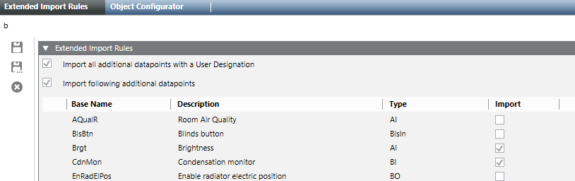

Extended Import Rules
Scenario: Changing import rules can import more data points for a room (for example, physical data points). However, the maximum number of rooms for import is reduced versus the defined standard.
Reference: For background information, see Extended Import Rules section.
Flowchart:
Prerequisites:
- System Manager is in Engineering mode.
- The System Browser is in Management View.
Steps:
1 – Create Library Folder for Extended Import Rules
- Select Project > System Settings > Libraries > L1.Headquarter > BA > Device > Desigo Automation and Control.
- Click Customize the entire library to a lower level
 .
. - A confirmation message displays.
- Click OK.
- An empty folder structure is created for the project library under Project > System settings > Libraries > Project > BA > Device > Desigo Automation and Control.
2 – Create Extended Import Rules
- Select Project > System Settings > Libraries > Project > BA > Device > Desigo Automation and Control > Import Rules.
- Select the Library Configurator tab.
- Click New Object
 , then Create New Extended Import Rules.
, then Create New Extended Import Rules. - In the New Object dialog box, enter a Name and Description.
- In the Import Rules folder, select the new extended import rules.
- The Extended Import Rules displays.
- In the Extended import rules expander, select All data points with user designations, if you want to import all physical data points with a user designation.
- Select Import following, specific object types, if you want to import specific physical data points.
- Select Import for each Object type you want to import.
- Select a line and click Copy entry to add additional object types. NOTE: Only lines with the symbol
 can be edited.
can be edited.
a. You can keep or change the name of the copied object type.
NOTE: The Type must be different if you retain the Object type name.
b. Change the Description.
c. From the drop-down list, select the Type.
d. Select Import. - Click Save
 .
.
- The Extended Import Rules are defined and apply to the entire project.

3 – Apply Extended Import Rules
- Select Project > Field Networks > [Field Network] and click the Desigo Automation and Control tab.
- The Desigo Automation and Control page displays.
- Open the Extended Import Rules expander.
- In the Extended Import Rules drop-down list, select your defined import rule.
- Click Save .

NOTE:
Physical data points imported based on extended import rules are only displayed in the segment where they are actually used by an application.